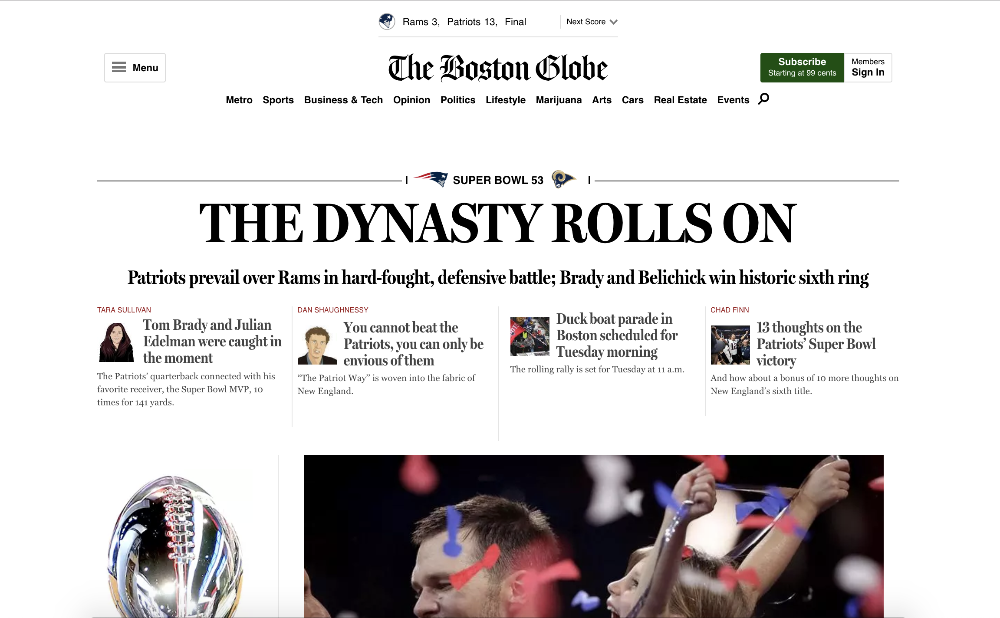
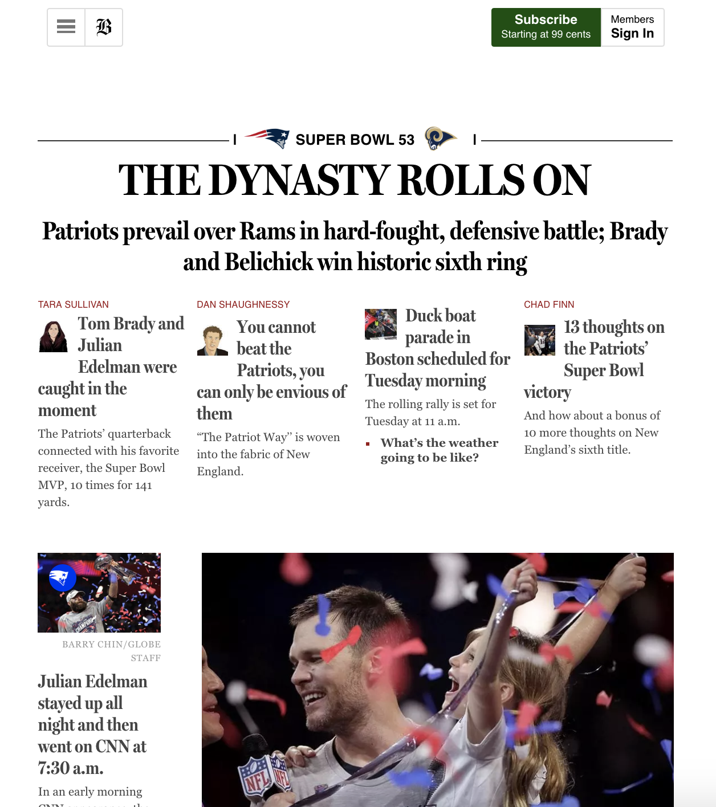

Some Screenshots
 

1. RWD: These days users use different types of devices to surf the web pages like in mobile phones rather than desktop hence making desktop version of web page lacking in usability and efficiency, then, developer had to switch to responsive web design, which automatically fits in various screen size.
2. CSS media queries can itself check the properties of the device, and bypass the different set of codes, if it’s true, some items are shown and others are placed elsewhere.
3. em are used while making the responsive web pages, it’s not specific unit so, it can handle the margin accordingly.